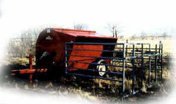

• portable 80 and 150 bushel models.
• no assembly required
• wings winch up for quick mobility
• all steel construction
• standard feed saver pan on all feeders
• adjustable feed flow gates on bin
• made in ALBERTA
Nifty Livestock Equipment Ltd.
1999-2005
About Nifty / Feed Equipment / Livestock ID / Handling Equipment / Dealers Page / Contact Us